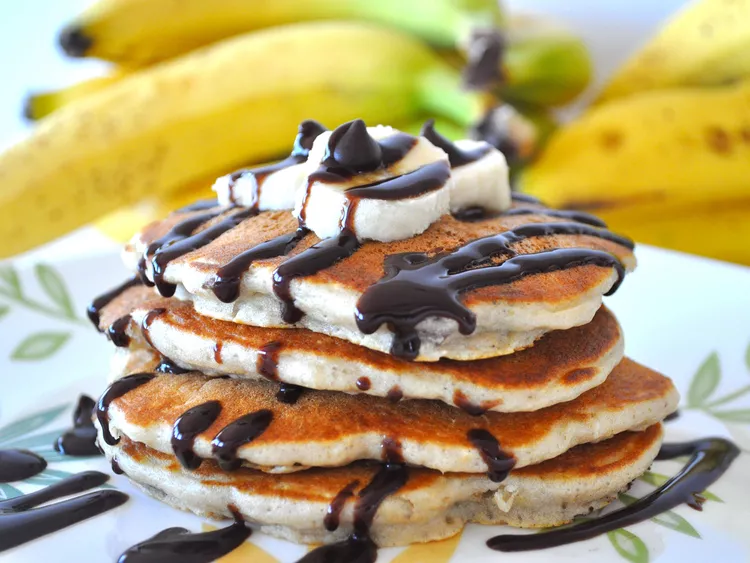

Chunky Monkey Pancakes

Description
I love banana pancakes and my daughter loves chocolate chip pancakes, so we came up with this yummy recipe to make us both happy! Serve with a dollop of soft butter, a sprinkle of powdered sugar, sliced bananas, and whipped cream with a side of butter pecan or maple syrup.
Ingredients
- 1 cup all-purpose flour
- 2 teaspoons baking powder
- 1 teaspoon baking soda
- ¼ teaspoon salt
- ¾ cup skim milk
- 3 tablespoons butter, melted
- 2 eggs
- 1 tablespoon white sugar
- 1 teaspoon vanilla extract
- 1 large banana, diced
- ½ cup miniature semisweet chocolate chips
- ¼ cup chopped pecans
- cooking spray
Steps
- Combine flour, baking powder, baking soda, and salt in a large bowl. Set bowl aside. In a separate bowl, whisk together the skim milk, melted butter, eggs, sugar, and vanilla. Make a well in the center of the dry ingredients and stir in the wet ingredients, being careful not to over mix the batter. Gently fold in the banana, chocolate chips, and nuts.
- Heat a large skillet over medium heat, and coat with cooking spray. Pour 1/4 cupfuls of batter onto the skillet, and cook until bubbles appear on the surface. Flip with a spatula, and cook until browned on the other side.